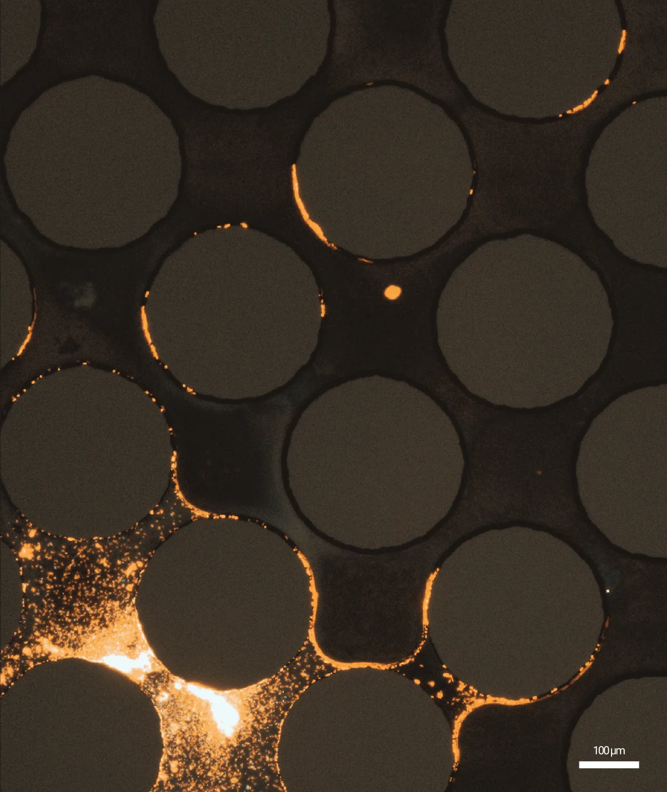
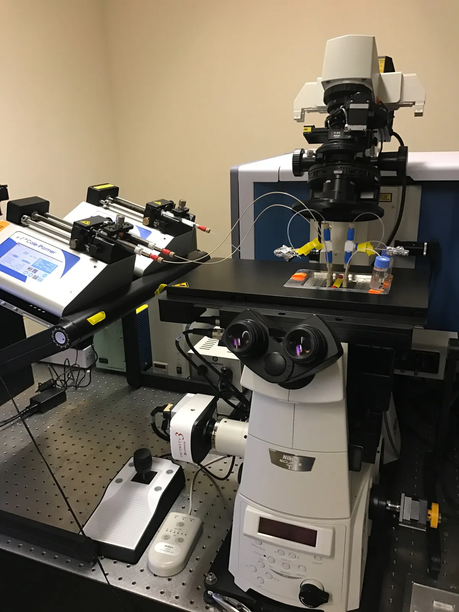
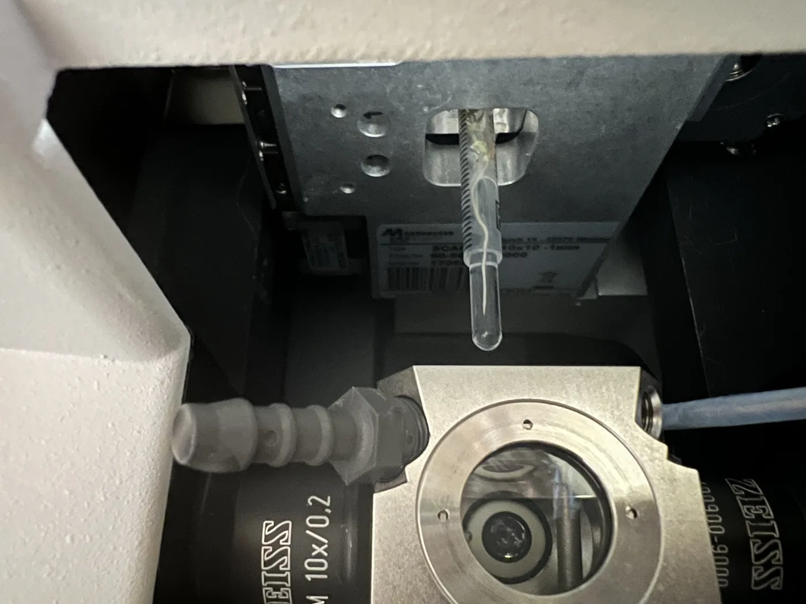
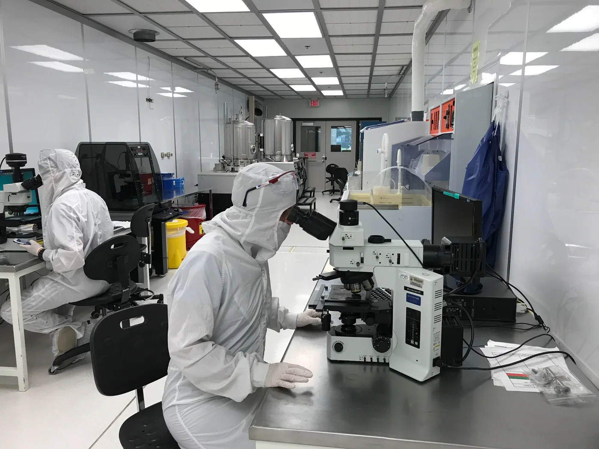

Mechanisms in context
How do physical, chemical, and biological conditions shape microbial behavior?
Microbes experience environments structured by water, chemical gradients, and neighboring organisms. Well-mixed cultures have enabled fundamental discoveries in microbiology; we build on that foundation by asking how microbial mechanisms operate when we restore environmental context.
We investigate how nutrient availability, hydration, pore structure, and interactions with neighboring microbes and roots influence microbial signaling, metabolism, competition, and cooperation. We are particularly interested in quorum sensing and secondary metabolites: how environmental conditions shape their production, and how these compounds influence microbial interactions and nutrient transformations. We connect cellular regulation with solute transport to understand when and where these processes affect environmental chemistry.
Microfluidic models, physiological and genetic experiments, and rhizosphere imaging allow us to isolate mechanisms while retaining the environmental features that matter. We progressively introduce complexity to test which mechanisms persist, which change, and why.



